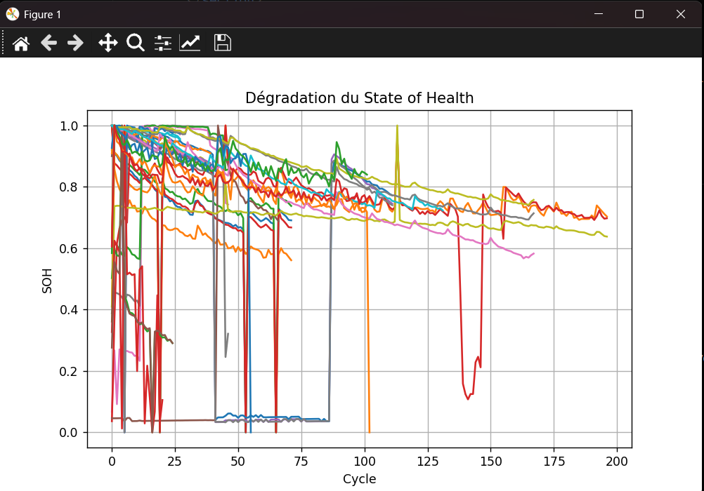
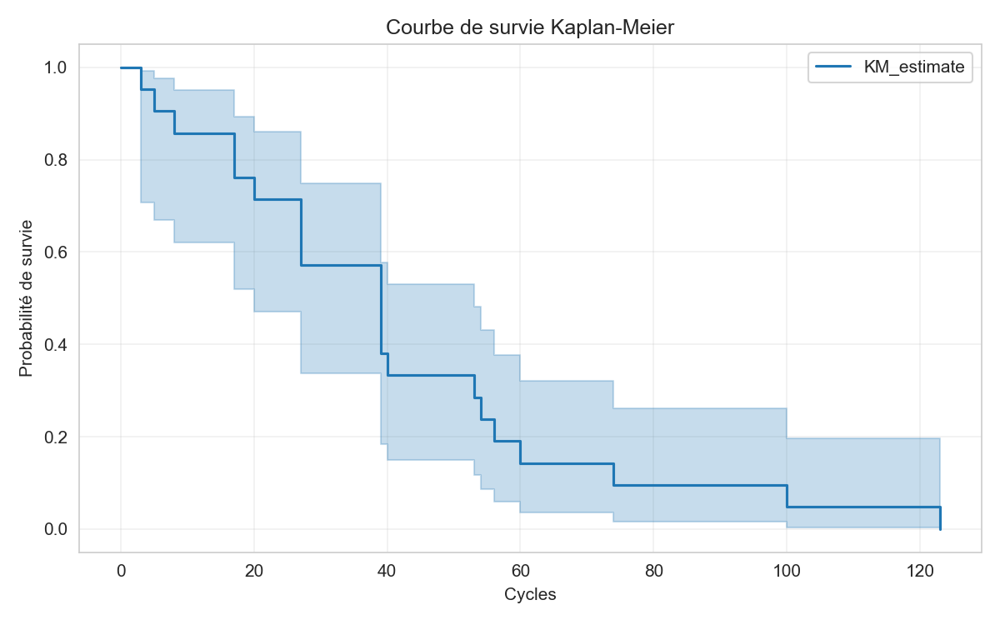
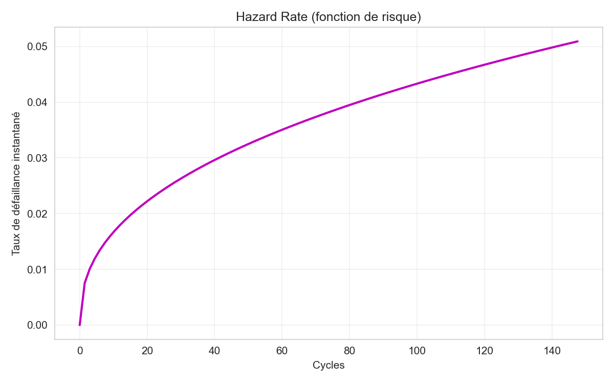
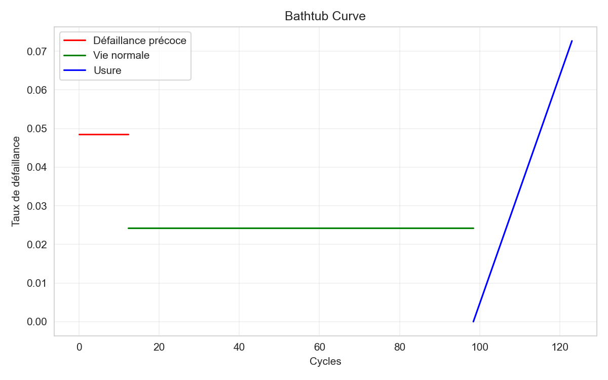
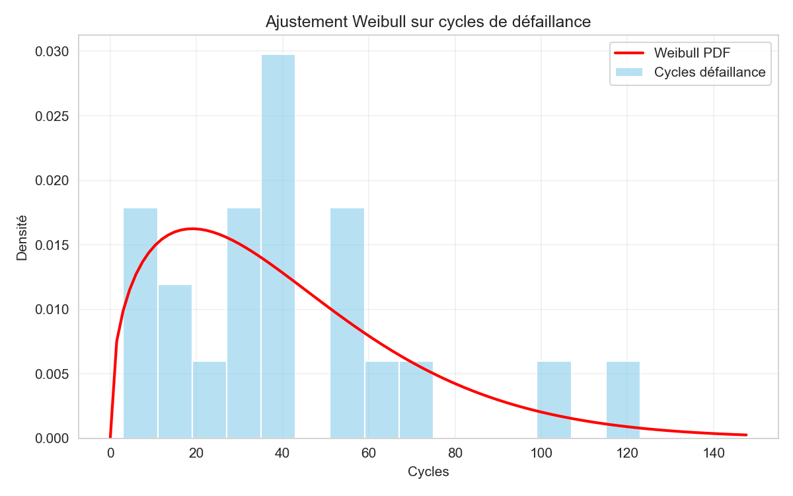
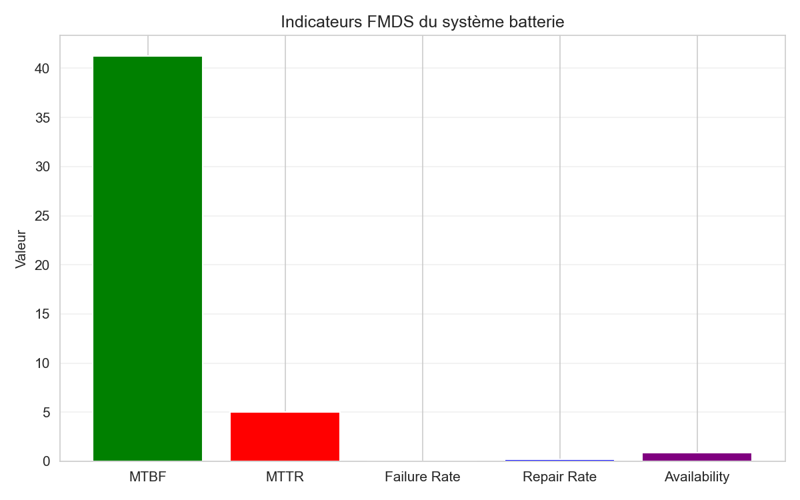
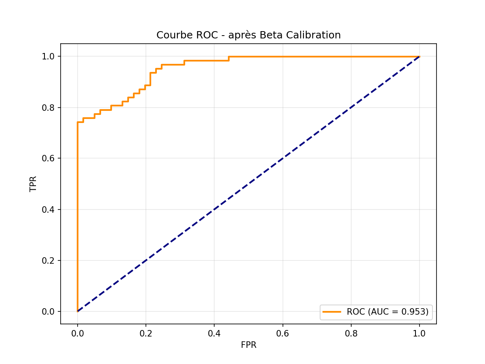
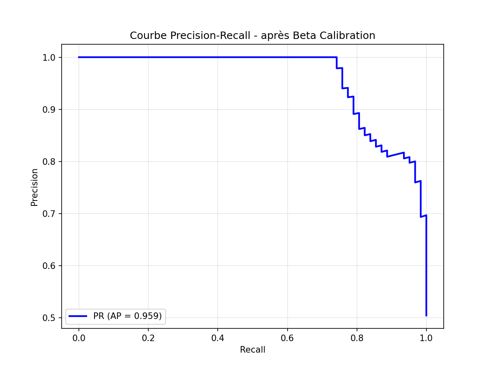
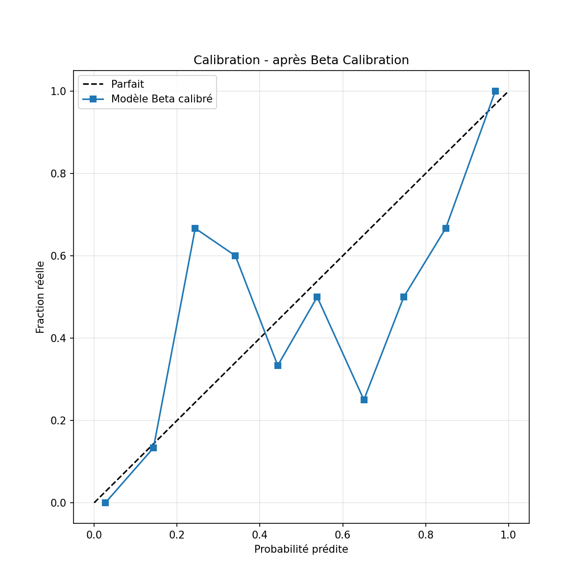
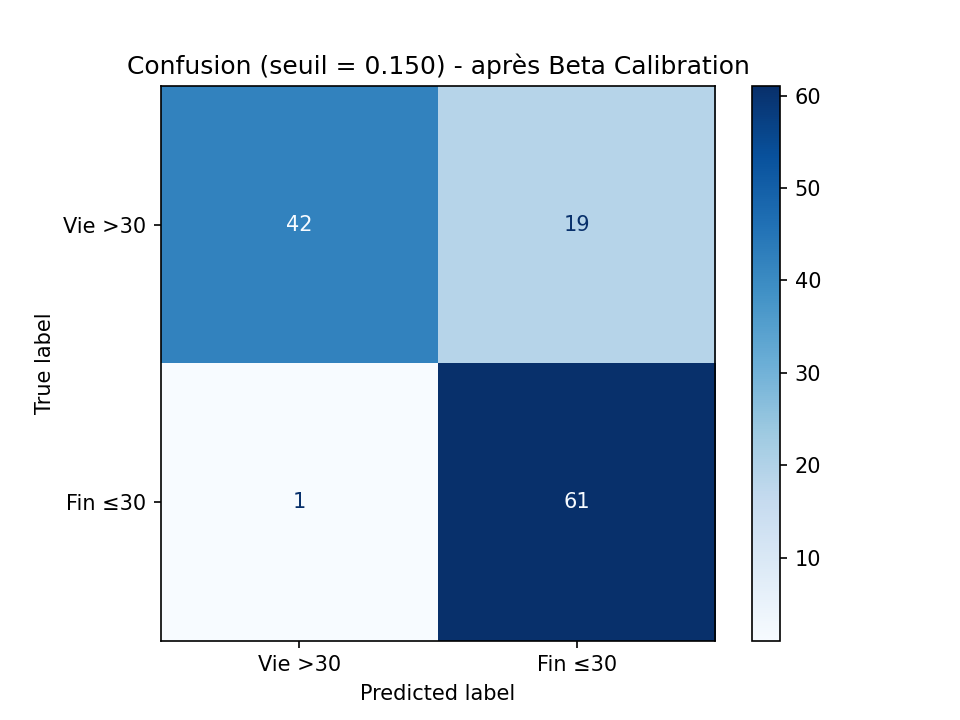

Étude de cas : Prédiction de la durée de vie restante (RUL) des batteries lithium-ion
Mini-projet – Maintenance prédictive
Auteur : Noujoud
Date : Mars 2026
Table des matières
- 1. Introduction
- 2. Présentation du dataset
- 3. Analyse FMDS Classique
- 4. Méthodologie – CNN+GRU
- 5. Résultats – Performances de régression
- 6. Résultats – Performances probabilistes et calibration
- 7. Comparaison des modèles
- 8. Prédictions individuelles par batterie
- 9. Limites et améliorations possibles
- 10. Conclusion et perspectives
- Références
1. Introduction
Les batteries lithium-ion sont essentielles aux véhicules électriques, au stockage d’énergie renouvelable et aux systèmes critiques. Leur dégradation imprévisible provoque pannes coûteuses et risques de sécurité. La prédiction précise de la Remaining Useful Life (RUL) permet une maintenance prédictive efficace et une meilleure sécurité.
→ Plus de détails sur l’importance des batteries Li-ion
Dataset : NASA Randomized Battery Usage Data Set (PCoE, 2014) – cellules 18650 LiCoO₂ avec profils de courant randomisés (RW1 à RW28).
Tâche principale : Régression RUL + classification binaire (RUL ≤ 30 cycles ?).
Métriques clés : RMSE, MAE, PHM score, Brier score, ROC-AUC, Average Precision, courbes de calibration.
2. Présentation du dataset
- Dataset source : NASA Randomized Battery Usage Data Set (Random Walk – profils aléatoires)
- Nombre de cellules analysées : 31 (B0005 à B0056)
- Seuil de fin de vie (EOL) : 70 % de la capacité initiale
- Conversion cycles → heures : durée moyenne par cycle calculée individuellement
Lien officiel NASA : NASA PCoE – Randomized Battery Usage
Téléchargez les fichiers :
↓ metadata.csv (métadonnées) ↓ Prédictions RUL (cycles + heures) – 31 batteries3. Analyse FMDS Classique
Avant toute approche de maintenance prédictive par apprentissage profond, une analyse de fiabilité classique (FMDS) est réalisée sur les données réelles de dégradation :
- Visualisation de la dégradation du State of Health (SOH)
- Estimation non-paramétrique de la survie via Kaplan-Meier
- Ajustement paramétrique de la loi de Weibull + densité de probabilité
- Analyse du taux de risque (Hazard Rate)
- Courbe Bathtub (défaillances précoces / vie normale / usure)
- Indicateurs quantitatifs : MTBF, MTTR, taux de défaillance/réparation, disponibilité

Figure 3.1 : Dégradation du State of Health (SOH) pour les 28 batteries
Remarque : Forte variabilité entre batteries, chutes parfois brutales, typique des tests accélérés NASA PCoE.

Figure 3.2 : Courbe de survie Kaplan-Meier (estimateur non-paramétrique)
Remarque : Chute rapide au début → confirme une usure infantile marquée sur les premières dizaines de cycles.

Figure 3.3 : Taux de risque (Hazard Rate) – Loi Weibull
Remarque : Taux croissant après ~40 cycles → phase d’usure accélérée en fin de vie.

Figure 3.4 : Courbe Bathtub – Défaillances précoces, vie normale et usure
Remarque : Phase infantile visible (taux élevé au début), puis vie utile stable, enfin usure marquée après ~100 cycles.

Figure 3.5 : Ajustement Weibull sur histogramme des cycles de défaillance
Remarque : La densité Weibull suit bien la distribution empirique, avec pic autour de 40 cycles.

Figure 3.6 : Indicateurs FMDS clés du système batterie
Remarque : MTBF de 41.29 cycles, disponibilité élevée (89.20 %) malgré MTTR hypothétique de 5 cycles.
Résultats quantitatifs actualisés (règles de calcul)
- MTBF : 41.29 cycles
- MTTR : 5 cycles (hypothétique)
- Taux de défaillance λ : 0.0242 par cycle
- Taux de réparation μ : 0.2000 par cycle
- Disponibilité stationnaire : 89.20 %
Remarque globale : Disponibilité élevée malgré la variabilité des profils d’usage. Les indicateurs sont calculés sur l’ensemble des données observées.
4. Méthodologie – Maintenance prédictive
4.1. Prétraitement et création des fenêtres
- Fenêtres glissantes de 10 cycles sur le ratio capacité/capacité initiale
- Normalisation StandardScaler sur X et y
- Split train/test par batteries (80/20) pour éviter le data leakage
4.2. Architecture du modèle CNN+GRU
Modèle hybride convolutif-récurrent pour capturer motifs locaux et dépendances temporelles longues.
- Couche Conv1D : 64 filtres, kernel size = 3, activation ReLU
- GRU 1 : 64 unités, return_sequences=True
- GRU 2 : 32 unités (Bidirectional pour contexte bidirectionnel)
- Dropout : 0.1 après chaque couche majeure
- Dense : 16 (ReLU) → 1 (linéaire)
- Optimiseur : Adam
- Early Stopping + ReduceLROnPlateau pour convergence optimale

Figure 4.1 : Évolution de la perte MSE – Modèle final CNN+GRU Bidirectional
Remarque : Convergence stable et rapide. Validation suit la train sans divergence → apprentissage robuste.
5. Résultats – Performances de régression
- R² = 0.8940
- RMSE = 8.75 cycles
- MAE = 7.19 cycles
- PHM score = 122.43

Figure 5.1 : Prédictions vs RUL réelle + Distribution des erreurs (modèle final)
Remarque : Excellente corrélation (R² 0.894). La majorité des points dans la zone ±15 cycles. Biais très faible → modèle précis et peu biaisé.
6. Résultats – Performances probabilistes et calibration
- ROC-AUC = 0.9551
- Average Precision = 0.9603
- Brier score = 0.0933
- Beta Calibration optimaux : a = 2.156, b = 1.577

Figure 6.1 : Courbe ROC après Beta Calibration (AUC = 0.9551)

Figure 6.2 : Courbe Precision-Recall après Beta Calibration (AP = 0.9603)

Figure 6.3 : Courbe de calibration après Beta Calibration

Figure 6.4 : Matrice de confusion au seuil optimal après Beta Calibration
Remarque : Calibration très proche de la diagonale parfaite. Très faible taux de faux négatifs → excellente détection des batteries en fin de vie.
7. Comparaison des modèles (performances sur test set)
| Modèle | R² | RMSE (cycles) | MAE (cycles) | PHM score |
|---|---|---|---|---|
| CNN+GRU (Bidirectional + Beta Calibration) | 0.8940 | 8.75 | 7.19 | 122.43 |
| LSTM | 0.7726 | 12.82 | 9.64 | 299.27 |
| Random Forest | 0.7826 | 12.54 | 9.76 | 302.91 |
| XGBoost | 0.6334 | 16.28 | 12.20 | 706.14 |
Remarque : Le modèle CNN+GRU Bidirectional domine nettement tous les autres en précision (R², RMSE, MAE) et en score PHM. Gain significatif grâce à la couche bidirectionnelle et au scheduler de learning rate.
8. Prédictions individuelles par batterie (RUL en heures – modèle final CNN+GRU)
Le modèle final prédit la durée de vie restante (RUL) pour chaque batterie du dataset NASA Randomized Battery Usage. Voici un extrait représentatif des 31 batteries prédites :
Remarque : RUL_heures_pred = RUL_cycles_pred × durée moyenne d’un cycle (variable selon profil). Valeurs arrondies à 2 décimales. Téléchargez le CSV pour la liste complète.
Extrait des prédictions (critiques, moyennes et longues durées)
| Batterie ID | RUL prédit (heures) | Niveau de risque / Remarque |
|---|---|---|
| B0005 | 4.59 | Critique – Fin de vie imminente, maintenance immédiate |
| B0006 | 2.39 | Critique – Épuisée, remplacement urgent |
| B0045 | 1.07 | Critique – Risque de panne très élevé |
| B0046 | 0.0 | Critique – Déjà en fin de vie |
| B0047 | 0.15 | Critique – RUL quasi nulle |
| B0007 | 94.28 | Moyenne – Surveillance régulière |
| B0018 | 40.07 | Critique à moyenne – Maintenance sous 1–2 mois |
| B0041 | 8.82 | Critique – Action rapide nécessaire |
| B0048 | 100.23 | Moyenne – Suivi mensuel |
| B0025 | 1916.19 | Longue durée – Excellente longévité |
| B0026 | 1661.84 | Longue durée – Très bonne santé résiduelle |
| B0027 | 1658.38 | Longue durée – Performance stable |
| B0028 | 1916.97 | Longue durée – Parmi les meilleures |
Classification des risques :
- Critique : RUL < 50 h → priorité immédiate
- Moyenne : 50–500 h → suivi régulier
- Longue durée : > 500 h → excellente santé
9. Limites identifiées et améliorations possibles
- Variabilité inter-cellule élevée due aux profils Random Walk → moins robuste sur usages contrôlés.
- Légère surestimation sur RUL élevé → risque d’overconfidence en début de vie.
- Absence d’estimation d’incertitude (pas d’intervalles de confiance) → limite pour décisions critiques.
- Résultats spécifiques au dataset NASA RW → généralisation à valider sur CALCE/Oxford ou données réelles EV.
- Pas de features physiques (température, courant max/min, résistance interne) → marge d’amélioration restante.
Améliorations prioritaires
- Monte-Carlo Dropout ou régression par quantiles pour intervalles de confiance.
- Architectures plus récentes (Transformer, TCN).
- Tests multi-datasets (NASA + CALCE + Oxford).
- Ajout de features dérivées (pente SOH, variance courant, température).
- Optimisation pour déploiement embarqué (quantization, pruning).
10. Conclusion et perspectives
Le modèle CNN+GRU Bidirectional avec Beta Calibration atteint des performances très élevées :
- R² = 0.8940
- RMSE = 8.75 cycles
- MAE = 7.19 cycles
- PHM score = 122.43
- Calibration excellente : Brier = 0.0933, ROC-AUC = 0.9551, AP = 0.9603
Ces résultats démontrent la puissance d’une approche hybride convolutif-récurrente pour la prédiction de RUL sur des données complexes comme celles du dataset NASA Randomized Battery Usage.
Perspectives : intégration d’incertitude bayésienne, tests multi-datasets, ajout de features multi-physiques, déploiement temps réel sur BMS embarqué.
Références
- NASA Randomized Battery Usage Data Set (PCoE, 2014)
- Kull et al. (2017) – Beta Calibration
- PHM 2008 Data Challenge